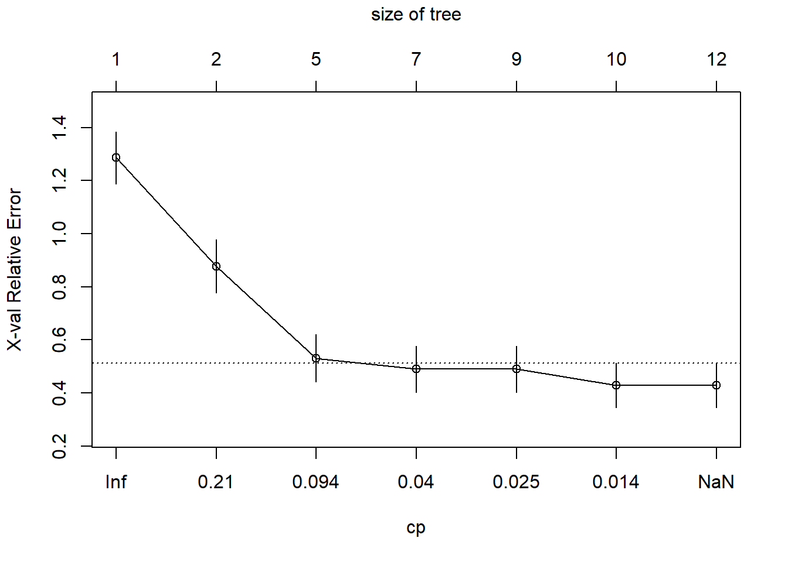

2 Exercise 1: Crabs Data
In the crabs data example we are interested in predicting the sex of a crab based on its morphological measurements. This data is available in the MASS library with the following variables:
- sp: species - “B” or “O” for blue or orange (not used);
- sex: as it says (the classification variable of interest);
- index: index 1:50 within each of the four groups (not used);
- FL: frontal lobe size (mm);
- RW: rear width (mm);
- CL: carapace length (mm);
- CW: carapace width (mm);
- BD: body depth (mm).
This data can be extracted from the MASS library via:
We are interested in predicting the sex of the crab based on the last 5 variables, so we create a data frame of these variables to be used.
Task
- Split the data into training, validation and test data sets (50%, 25%, 25% for each set).
Check Lab 3, Section 2.2.1.
- Build a classification tree on the training data and plot the tree. Note down the decision rules for each node and ensure that you understand what each of the numbers mean.
Use the rpart and rpart.plot commands to build and visualise the classification tree.
Print out the rules of the classification tree built in step 2. Again, you should understand what each of the numbers corresponds to.
Based on the plot or output of the classification tree, predict the class for the following observation.
## FL RW CL CW BD
## 150 23.1 15.7 47.6 52.8 21.6You can also check the result by using the predict function in R.
- How could you determine if the classification tree is under-fitting or overfitting?
Which evaluation criteria may be used to assess the performance of classification tree?
Calculate sensitivity and specificity for training and validation sets, assuming female is the positive class and male is the negative class.
Based on results in (b), what's your conclusion about under-/over-fitting?
2.1 Pruning
We may also want to reduce the size of the tree (prune it) to avoid overfitting and maximising the chance of being gerenalisable to future data. We can do this using cross-validation as below. Either look at the cross-validation complexity plot or use the output of the xerror (cross-validation error) variable.
There are two strategies to choose the value of complexity parameter (and the corresponding tree size). The first option is to prune the tree back to the point where the cross-validated error is a minimum, known as the minimum error strategy. The second option is to prune the tree using the complexity parameter of the smallest tree that is within one standard deviation of the tree with the smallest xerror, known as the smallest tree strategy. In the case that there are multiple trees with the same xerror; we will choose the smaller one (since that tree would predict as well as the other one but it would also have fewer branches; thus we can also avoid overfitting).
Task
- Build a fully grown tree.
Change the values of minsplit, minbucket, maxdepth and cp in rpart.control.
- The complexity parameter (cp) table for the fitted tree can be produced by using
printcp. Given the output from a fully grown tree, decide the appropriate cp value using both the minimum error strategy and the smallest tree strategy.
##
## Classification tree:
## rpart(formula = sex ~ FL + RW + CL + CW + BD, data = train.crab,
## method = "class", control = rpart.control(minsplit = 2, minbucket = 1,
## maxdepth = 30, cp = -1))
##
## Variables actually used in tree construction:
## [1] BD CL FL RW
##
## Root node error: 49/100 = 0.49
##
## n= 100
##
## CP nsplit rel error xerror xstd
## 1 0.265306 0 1.000000 1.28571 0.098531
## 2 0.173469 1 0.734694 0.87755 0.101036
## 3 0.051020 4 0.204082 0.53061 0.089517
## 4 0.030612 6 0.102041 0.48980 0.087160
## 5 0.020408 8 0.040816 0.48980 0.087160
## 6 0.010204 9 0.020408 0.42857 0.083124
## 7 -1.000000 11 0.000000 0.42857 0.083124For the following four questions, enter your answer by rounding to 3 decimal places.
- What is the training error rate after 4 splits?
The training error rate equals to rel error (relative training error rate) multiplied by root node error.
- What is the cross-validation error rate after 4 splits?
The cross-validation error rate equals to xerror multiplied by root node error.
Which cp value you would choose when using the minimum error strategy?
Which cp value you would choose when using the smallest tree strategy?
We could also choose the cp value according to the cp plot. The minimum error strategy refers to the cp value which has the lowest X-val Relative Error. The smallest tree strategy refers to the largest cp value which is under the dashed line; the intercept of this line equals to the minimum xerror plus its standard deviation.

- Prune the fully grown classification tree using the cp value found from the smallest tree strategy. Calculate sensitivity and specificity for training and validation sets again and compare to the results in Task 5.